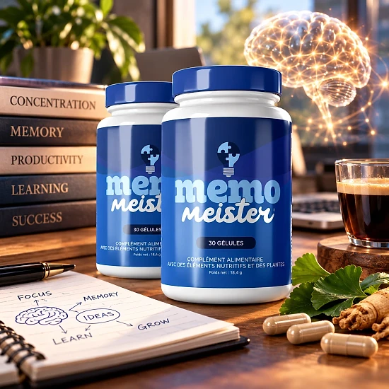

Qu’est-ce que Memo Meister et comment agit-il ?
En bref, Memo Meister est un complément en gélules décrit par la marque comme un nootropique naturel. La formule doit soutenir la mémoire, la concentration et les fonctions cognitives au fil des journées. Il concerne surtout les adultes qui cherchent à rester attentifs dans leur journée de travail ou d’étude.
Le libellé du flacon mentionne un complément « avec des éléments nutritifs et des plantes ». Chaque flacon contient 30 gélules, soit un mois à raison d’une gélule par jour.
On y trouve huit actifs, dont le zinc, la vitamine B3, la maca, le safran et un extrait d’écorce de pin. La marque explique avoir sélectionné et dosé chaque actif pour optimiser l’absorption. La formule est présentée comme exempte d’additifs artificiels et de produits chimiques nocifs. Le site précise qu’on peut l’utiliser longtemps sans dépendance, à raison d’une gélule chaque jour.
Concrètement, le zinc contribue à la fonction cognitive et la vitamine B3 au métabolisme énergétique normal, selon le site. L’étiquette ajoute que la niacine aide à réduire la fatigue. Les extraits de pin et de raisin sont riches en polyphénols, tandis que la maca vient de la tradition andine.
La marque parle de premiers ressentis au bout de deux à trois semaines et d’une cure d’au moins trois mois.
D’après l’emballage, Memo Meister est produit aux États-Unis et distribué dans l’UE par une société de Dublin, Digistore24 MSLW Limited. Le contenu net est de 25,52 g d’après le flacon. Le flacon porte une étiquette en français avec la composition, le mode d’emploi et les précautions.
Comme tout complément, Memo Meister n’est pas destiné à diagnostiquer, traiter, guérir ou prévenir une maladie. Ses allégations n’ont pas été évaluées par l’EFSA, indique le site, et chacun réagit différemment.
Memo Meister – Ingrédients
Le tableau nutritionnel de Memo Meister détaille les doses par gélule :
20 mg de niacine : une vitamine B3 utile au métabolisme énergétique normal.
Zinc à 11 mg : participe au bon fonctionnement cognitif.
Deux acides aminés : L-citrulline et L-carnitine, à 150 mg chacune.
Extrait d’écorce de pin, Pinus pinaster (100 mg) : une source naturelle d’antioxydants.
Maca, 50 mg : une racine andine utilisée depuis longtemps.
Peau de raisin (15 mg) et stigmates de safran (5 mg) : deux extraits végétaux qui complètent la formule.
Un extrait de pois mascate apparaît aussi dans la liste, sans quantité précise. La gélule est d’origine végétale, avec de la cellulose et des anti-agglomérants comme excipients.
Les doses par gélule permettent une lecture claire de la formule. Aucun stimulant de type caféine ne figure dans la liste des ingrédients. Le safran et la maca ont une longue histoire d’utilisation dans leurs régions d’origine. La plus grosse part de la gélule revient aux deux acides aminés, avec 300 mg au total.
Memo Meister – Effets secondaires
Le fabricant décrit Memo Meister comme un produit naturel bien accepté par la plupart des gens. D’après la FAQ, les effets sont rares et se limitent souvent à de légers troubles digestifs au départ.
La grossesse, l’allaitement et l’âge de moins de 18 ans sont des contre-indications indiquées. Elle conseille de consulter un médecin en cas de traitement, de problème médical ou de suivi médical.
Le site mentionne surtout les médicaments pour le diabète, l’hypertension et les anticoagulants. Il est aussi recommandé d’espacer de deux heures minimum la prise du complément et celle d’un médicament.
Restez à la dose indiquée et vérifiez le sceau de sécurité avant usage. Face à un inconfort, mieux vaut arrêter et demander l’avis d’un professionnel. Comme chaque organisme est unique, un avis professionnel est toujours précieux. La FAQ le déconseille aussi aux personnes ayant des problèmes de santé sévères sans supervision médicale. Avant de commencer, une lecture complète de l’étiquette aide à repérer un éventuel ingrédient à éviter. Ces règles sont courantes pour ce type de formule mêlant nutriments et plantes. Le site indique que l’EFSA et la FDA n’ont pas évalué ses déclarations : une raison de plus d’être prudent. Le plus simple est d’apporter le flacon chez le médecin, pour qu’il examine la liste des ingrédients.
Memo Meister – Posologie
La dose recommandée est d’une gélule par jour. La FAQ de la page de vente conseille de la prendre 30 minutes avant un repas principal, avec un grand verre d’eau.
Avec 30 gélules, un flacon dure un mois. La gélule se prend telle quelle, avec un verre d’eau. La page de commande cite deux gélules, mais le flacon parle d’une seule : l’étiquette fait foi.
Le fabricant souligne l’importance de la constance : les premiers changements viendraient en deux à trois semaines. Des résultats plus nets sont annoncés vers quatre à six semaines, pour une cure conseillée d’au moins 90 jours.
La marque conseille d’associer Memo Meister à une alimentation équilibrée et à une activité physique régulière. Le flacon précise qu’aucun complément ne se substitue à un régime varié. Si une prise est oubliée, mieux vaut ne pas doubler et reprendre le rythme habituel. En notant la date de départ, on sait facilement quand prévoir le flacon suivant.
Restez à la dose prévue et conservez le produit à l’abri de l’humidité, sous 30 °C. Rangez-le loin des enfants ; la date de péremption est imprimée sous le flacon.
Memo Meister – Remboursement
Memo Meister bénéficie d’une garantie satisfait ou remboursé de 60 jours, d’après le site officiel. En cas d’insatisfaction, le remboursement complet de l’achat peut être demandé, dans le cadre des conditions officielles.
Fenêtre de retour : 60 jours à partir de l’achat, avec le renvoi de l’ensemble des flacons. Le point de départ des 60 jours est la date de la commande.
Étape un : le service client (support@centralmeister.com) doit recevoir votre numéro de commande et le motif. Le message doit contenir votre nom, votre adresse et vos coordonnées.
Deuxième étape : renvoyez le colis à Memo Meister Returns, Kleine Esch 669, 2841 MK Moordrecht, Pays-Bas, et gardez le numéro de suivi. Sans suivi, le retour n’est pas pris en compte. La confirmation de commande sert de preuve pour la date. Ces informations permettent au support de retrouver vite votre commande.
Étape trois : la marque contrôle le colis reçu et confirme sa décision par e-mail. Le versement se fait sur le moyen de paiement d’origine, en 5 à 10 jours ouvrables. En cas de question sur la démarche, le support répond par e-mail. Les remboursements passent toujours par le moyen de paiement utilisé pour la commande, précise la politique.
L’adresse helpdesk@digistore24.ie figure aussi sur l’étiquette, et la politique entière est consultable en ligne. Prenez le temps de la lire avant d’acheter.
Memo Meister – Avis clients
-
Marie Dubois — Paris, FranceAchat vérifié – 6 flacons
« Incroyable ! Mon énergie mentale a triplé en 3 mois avec Memo Meister. Je me sens à nouveau moi-même et je peux beaucoup mieux me concentrer. Un produit qui fonctionne vraiment ! »
-
Anne Petit — Marseille, FranceAchat vérifié – 6 flacons
« Après la ménopause, je pensais ne jamais retrouver ma vivacité mentale. Memo Meister a prouvé que j’avais tort ! Je me sens à nouveau énergique et mentalement claire à 52 ans. »
-
Richard Laurent — Bordeaux, FranceAchat vérifié – 6 flacons
« Je travaille comme coach personnel et j’ai toujours testé des produits. Memo Meister est différent ! Je ressens plus de concentration pendant l’entraînement et plus d’énergie. Une très bonne expérience que je partage avec les autres ! »
Memo Meister – Où l’acheter ?
La commande de Memo Meister se fait sur le site officiel get-meister.com, et Digistore24 s’occupe du paiement. Ni Amazon ni les grandes surfaces ne le vendent, indique le site.
Des flacons proposés par des vendeurs inconnus peuvent sembler identiques, mais leur origine et leur stockage ne sont pas vérifiables. La qualité et la sécurité ne sont alors plus assurées, ni la garantie de 60 jours.
Le site officiel reste la voie la plus sûre pour obtenir le produit d’origine, avec garantie et service client. La page de commande parle d’un paiement unique. Le support peut être contacté à support@centralmeister.com. Le site officiel donne accès à l’étiquette, pour tout vérifier avant la commande. Commander à la source assure aussi un flacon conforme à l’étiquette publiée en ligne, et un accès simple au service client. Vérifier la provenance avant d’acheter évite les mauvaises surprises avec un complément.
Un dernier contrôle : confirmez que la page est bien le site officiel de Memo Meister avant de payer.
Pour être sûr d’obtenir le produit authentique, la plupart des utilisateurs choisissent de passer par le site officiel.
Memo Meister est-il une arnaque ?
Les éléments publiés montrent que Memo Meister n’est pas une arnaque. Memo Meister est un complément commercialisé par Digistore24, plateforme sérieuse, et conçu pour la mémoire et l’attention.
L’étiquette indique clairement la teneur de chaque ingrédient principal. Les allégations sur le zinc et la vitamine B3 correspondent à des fonctions reconnues de ces nutriments.
Le distributeur à Dublin, une adresse d’assistance et une adresse de retour néerlandaise sont bien indiqués. Ces coordonnées ne disent rien des résultats, mais rassurent sur l’existence des vendeurs.
Petit bémol : le compte à rebours et les messages de stock limité de la page de commande. Les bénéfices annoncés pour le cœur ou l’appétit ne figurent pas sur l’étiquette, qui reste la référence.
Chaque commande profite d’une garantie de 60 jours et d’une démarche de retour détaillée. Aucun résultat n’est garanti, et un complément ne remplace pas un suivi médical. Mieux vaut aborder ce complément avec des attentes raisonnables. Il est plus juste d’évaluer le produit après la cure recommandée qu’au bout de quelques jours.
Pour un soutien simple de la mémoire, Memo Meister est une piste à considérer, commandée sur le site officiel, avec avis médical sous traitement.
Pour vérifier les détails du produit ou sa disponibilité actuelle, le site officiel de Memo Meister reste l’option la plus sûre.

Vérifier la disponibilité sur le site officiel